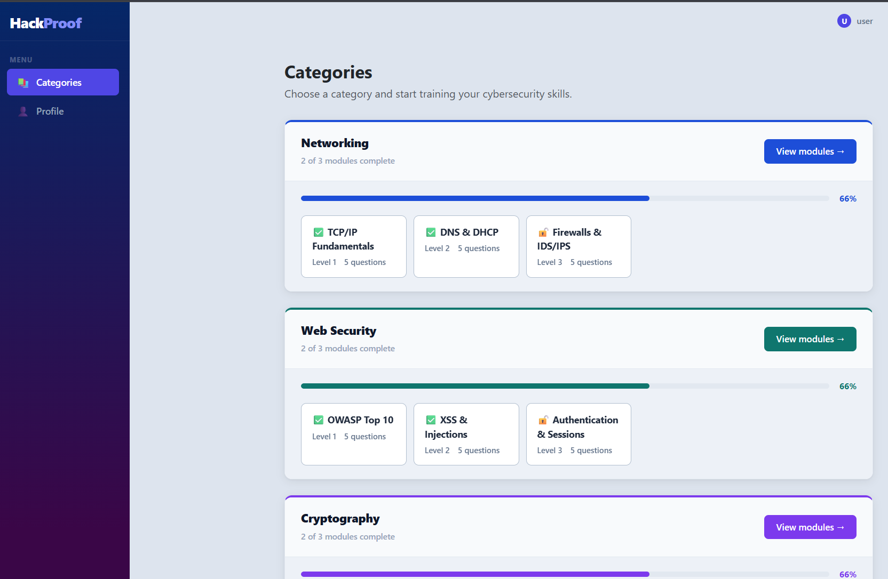
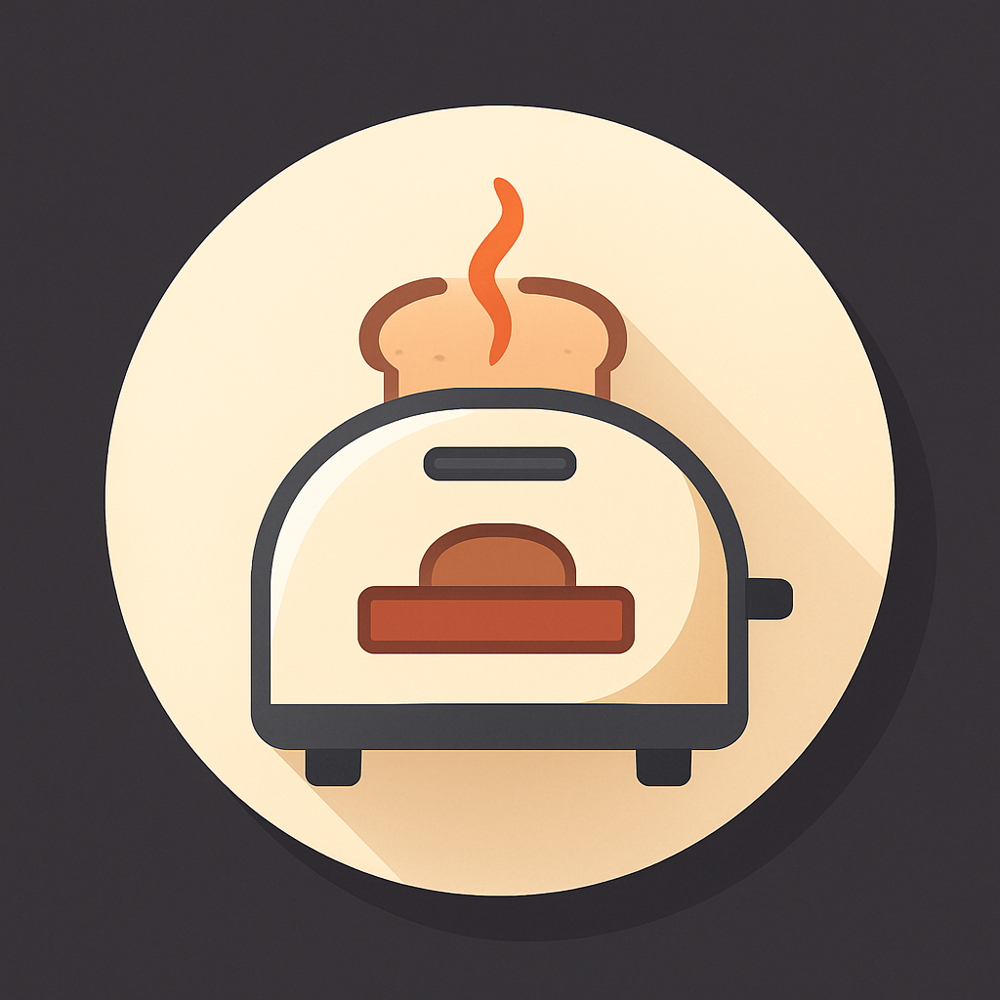
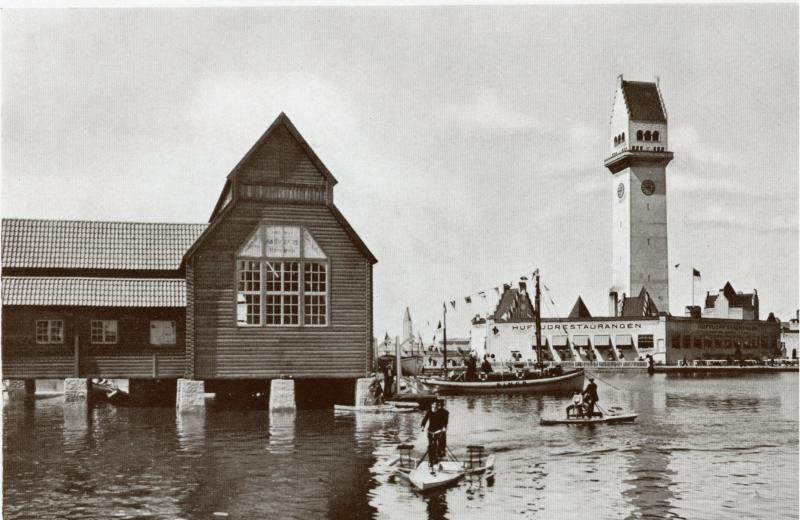
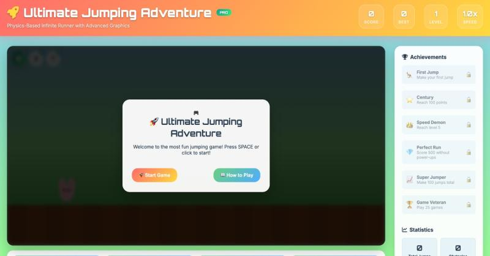
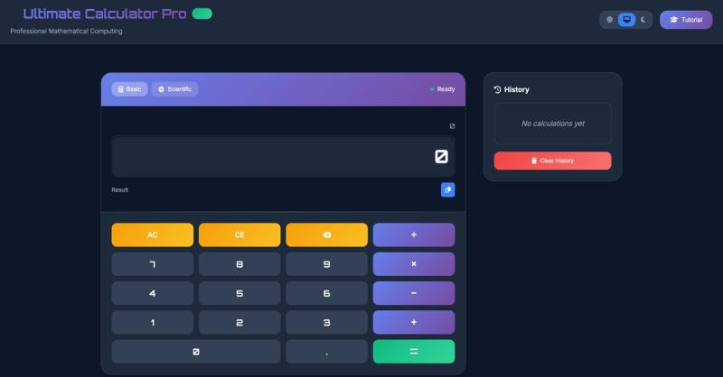

IT Systems & Application Management | Digitalization | AI & Automation | API Integration | .NET, SQL, JavaScript, Python
I develop structured and scalable digital solutions using C#/.NET, SQL, JavaScript and modern web technologies, with a focus on automation, AI integration and efficient information systems.

A web application built with Blazor and C# using a layered architecture. The project demonstrates separation of concerns, component-based UI, and structured data handling within a .NET environment.

A desktop application developed with WPF and C#, focusing on user interface design, data management, and system integration.

A public, responsive gallery presenting digitized historical material with a clear structure and contextual captions. Built using HTML, CSS, Bootstrap 4, and JavaScript. The project includes dark mode support and a lightweight slideshow optimized for accessibility and cross-device browsing.

A simple side-scrolling game inspired by the Chrome T-Rex game. Implements a game loop, obstacle timing, and collision detection with smooth CSS animations, demonstrating state handling and event listeners in vanilla JavaScript.

A browser-based calculator supporting keyboard input, decimals, clear/backspace, and operation chaining. Built with a focus on predictable behavior and readable, maintainable code using HTML, CSS and vanilla JavaScript.